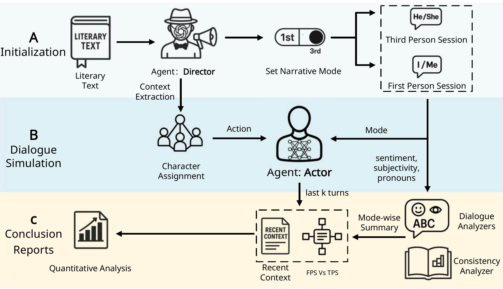
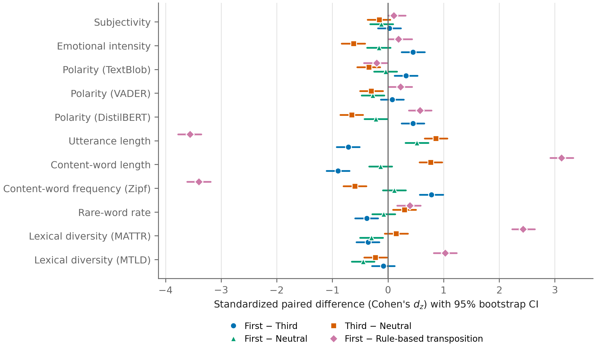
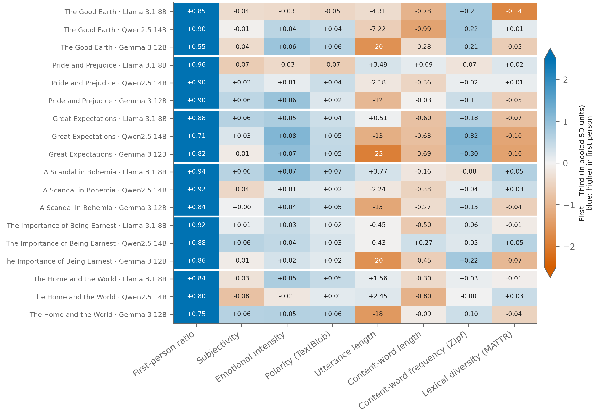
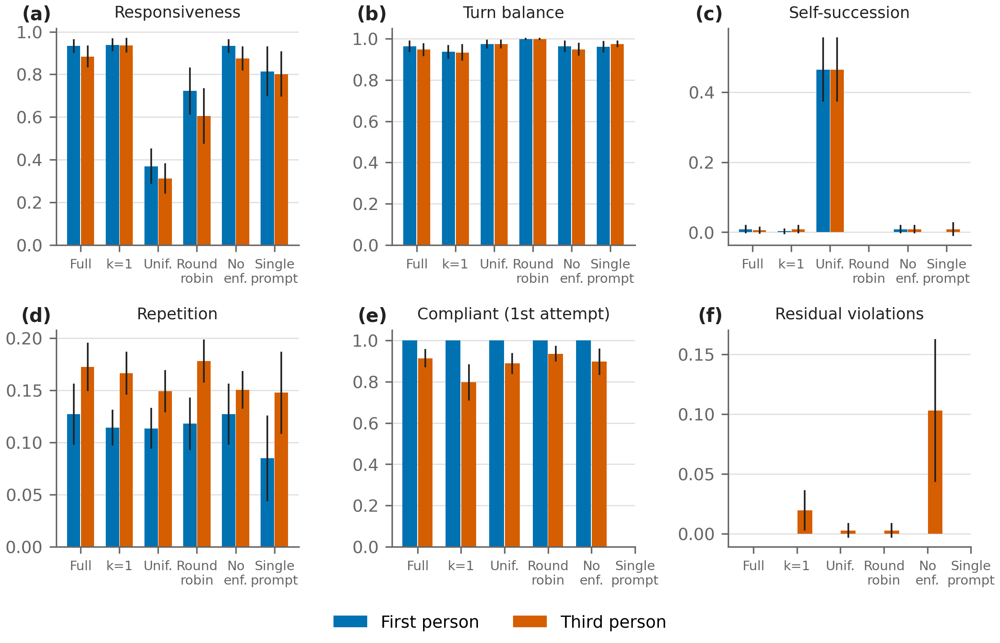

An LLM-driven multi-agent simulation framework for quantitative analysis of narrative voice shifts in literary texts
TL;DR. A Director Agent and role-playing Actor Agents re-stage literary scenes in first- or third-person voice under controlled, seeded conditions. Across six excerpts, three open-weight LLMs and five seeds, third-person narration shifts the vocabulary towards a more formal register and dampens affect, while lexicon-based subjectivity does not change and character identity is only partly preserved.
Abstract
Narratological accounts of first- and third-person narration rely mainly on interpretation and are difficult to test under controlled conditions. We present a large language model (LLM)-driven multi-agent simulation framework that makes narrative voice an experimental variable. A Director Agent extracts the characters and dialogue of a literary excerpt and enforces the mode in which every turn is rendered (first-person direct speech, third-person narration, or no instruction), while Actor Agents with a sliding-window memory generate the dialogue and a seeded, addressee-aware policy selects the next speaker. We evaluated the framework on six excerpts by six authors that differ in genre and narrative structure, with three open-weight LLMs and five random seeds (90 sessions per mode), using paired statistical tests, a no-instruction control, a rule-based transposition baseline, ablations of mode enforcement, memory and speaker selection, and two LLM judges. The framework controlled narrative voice reliably (0.0% residual mode violations). In our simulations, third-person narration used longer and less frequent content words than first-person speech (|dz| = 0.90) and was affectively more neutral (emotional intensity, |dz| = 0.45), effects that pronoun substitution does not explain, whereas lexicon-based subjectivity did not differ between the modes (|dz| = 0.03). A distributional consistency measure did not distinguish characters, but speaker attribution showed that character identity was partially preserved across modes (balanced accuracy 0.63 across modes vs. 0.84 within a mode; chance 0.38). Ablations showed that Director enforcement and actor memory improve compliance with the narrative mode, that addressee-aware speaker selection makes turns respond to the addressed character, and that a single prompt cannot control narrative voice turn by turn; the two LLM judges recognized the speakers of masked turns equally well in both modes but disagreed on perceived subjectivity. Of three attempts to preserve the characters' voice in third-person narration, a speak-then-narrate variant, in which the Director narrates the Actors' own speech in free indirect style, raised cross-mode attribution to 0.73 and removed most of the register shift, which indicates that the shift arises from narratorial paraphrase, although the LLM judges, and three experts in a small blinded evaluation, rated these sessions as less coherent; the experts identified the speakers of masked turns well above chance in all modes. These results support the use of multi-agent LLM simulations as controllable instruments for computational narratology, and they show that effects observed in a single run on a single text do not necessarily generalize.
Framework

Experimental design
| Excerpt | Author | Genre | Narrative structure |
|---|---|---|---|
| The Good Earth (ch. 26) | Pearl S. Buck, 1931 | Realist family novel | Heterodiegetic third person |
| Pride and Prejudice (ch. 34) | Jane Austen, 1813 | Novel of manners | Third person, free indirect discourse |
| Great Expectations (ch. 8) | Charles Dickens, 1861 | Bildungsroman | Retrospective first person |
| A Scandal in Bohemia | Arthur Conan Doyle, 1891 | Detective story | First-person witness narrator |
| The Importance of Being Earnest (act I) | Oscar Wilde, 1895 | Comic drama | No narrator |
| The Home and the World (ch. 10) | Rabindranath Tagore, 1916 | Political novel | Alternating first-person narrators |
Example
The same scene of The Good Earth, same model and seed, rendered in the two narrative modes (first turns):
Wang Lung: My wife, do not fret. Our son will marry well and care for the fool as you have. The gods will see to it that all is well.
O-lan: I know it is hard to let go, but you must look after them as I cannot. Ensure they are cared for and that the fool is well taken care of.
Wang Lung: My dear, you must rest now. The eldest son will marry soon, and I will see to it that all your wishes are fulfilled. Do not worry, for I am here and will take care of everything.
O-lan: I trust you, my husband, and I know you will do right by them. But promise me you will see to the fool's needs as I have.
the eldest son: Mother, please rest assured. I will take care of everything as Father says. I will marry soon and look after the fool as you have.
Wang Lung: Wang Lung reassured O-lan that everything would be taken care of, that their son would be guided well and that she had no need to worry about him or the family. He insisted that he would see her wishes fulfilled and that her eldest son would have a good life.
O-lan: O-lan asked Wang Lung if he had ensured that their son would be taught the ways of respect and duty towards his wife and her family, and if he had reminded him of the importance of providing for his wife and children.
Wang Lung: Wang Lung assured O-lan that he would see to it that their son would be taught the ways of respect and duty, and that he would remind him of the importance of providing for his wife and her family, as she wished.
O-lan: O-lan asked Wang Lung if he had spoken to the maid about the importance of her role in the family, and if he had reminded her of the duties she owed to her husband and his ancestors.
the eldest son: The eldest son, feeling a mix of nervousness and devotion, told his mother that he understood the importance of respecting his wife and her family and would do his best to provide for them.
Key results



Improving the preservation of character voice
Three attempts to keep the characters' voice in third-person narration were compared with the standard third-person mode on the same excerpts, models and seeds (Table 9 of the paper). Voice exemplars in the role cards did not help, and a voice-preserving instruction helped only moderately while reducing compliance with the narrative mode. In the speak-then-narrate variant, each Actor speaks in its own voice and the Director narrates the speech in free indirect style: cross-mode speaker attribution rose from 0.60 to 0.73, and the difference in content-word length between first-person speech and third-person narration fell from 0.47 to 0.26 characters, although the LLM judges rated these sessions as less coherent. The more formal register of the standard third-person mode therefore arises from the narrator's paraphrase rather than from the grammatical person.
Speak-then-narrate on the scene from The Good Earth (Qwen2.5 14B, seed 0, first four turns):
| Speaker | Actor's speech | Director's narration |
|---|---|---|
| Wang Lung | My dearest, you worry too much. Our son will be a fine husband and father, just as you have taught him. Do not fear for our future, for I will take care of everything. | Wang Lung's dearest, she worries too much. Their son will be a fine husband and father, just as she has taught him. Do not fear for their future, for he will take care of everything. |
| O-lan | I know my son will strive, but I must see him settled. Prepare for the wedding feast, Wang Lung, and let there be no shortage. | O-lan knew her son would strive, but she must see him settled. She told Wang Lung to prepare for the wedding feast and let there be no shortage. |
| Wang Lung | My dear, you shall see our son wed and the feast will be splendid. Do not trouble yourself, for I shall ensure all is as you wish. | Wang Lung's dear, she shall see their son wed and the feast will be splendid. Do not trouble yourself, for he shall ensure all is as she wishes. |
| O-lan | I must see him settled, Wang Lung. I cannot rest until I see my eldest son married and content. | O-lan must see him settled, Wang Lung. O-lan cannot rest until O-lan sees O-lan's eldest son married and content. |
Reproduce
pip install -r requirements.txt
python -m spacy download en_core_web_sm
for m in llama3.1:8b qwen2.5:14b gemma3:12b phi4:14b qwen3.5:9b-q4_K_M; do ollama pull $m; done
PY=python WORKERS=4 bash scripts/run_all.sh # generation, judges, statistics
python scripts/make_figures.py --res resultsAll raw LLM responses are cached, so the statistics can be recomputed without re-running the models: python scripts/featurize.py && python scripts/analyze.py.
Citation
@article{zhao2026narrativevoice,
title = {An LLM-driven multi-agent simulation framework for quantitative analysis
of narrative voice shifts in literary texts},
author = {Zhao, Lili and Shi, Hui},
journal = {PeerJ Computer Science},
year = {2026},
note = {Manuscript CS-2026:04:138274, under review}
}